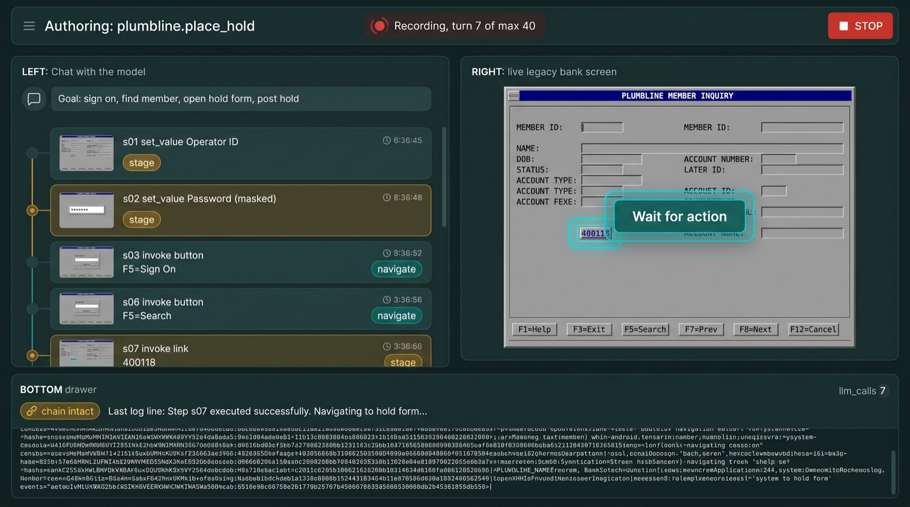
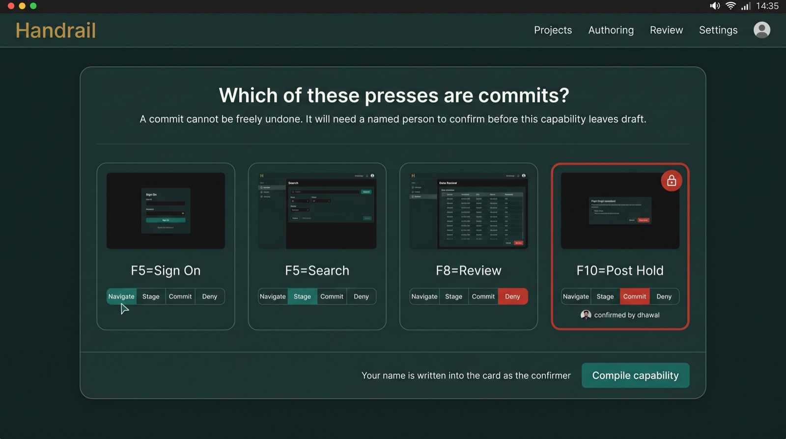
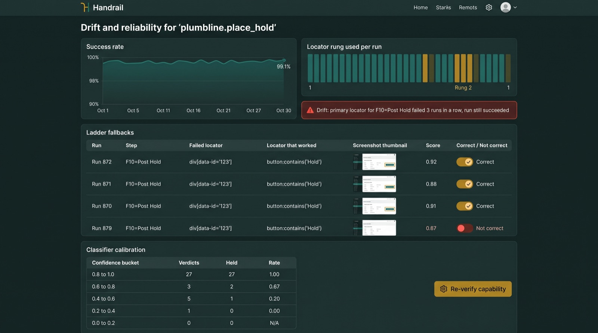
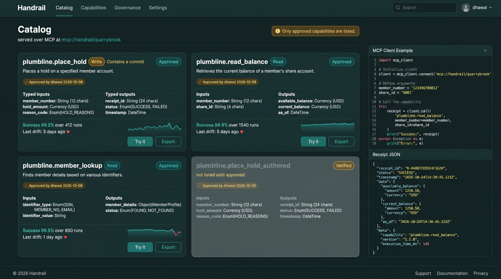

A governed capability platform. One screen task on a legacy application is compiled once, approved by a named person, and replayed with zero model calls, and every run leaves evidence that cannot be edited after the fact. These are the eleven screens a person meets, in order. Concept art; labels inside the images are approximate; the screens are now built as handrail ui on the web-ui branch.
Who it is forTeams who run the same task on software with no API, many times a day, and have to prove what happened: insurance agencies on carrier portals first, then banks and credit unions through a partner, then law firms and clinics.
What is differentCompetitors meter every run through a model. Handrail never needs a model for the hundredth run, asks a named person before anything irreversible, and hands a stuck run to a person on the same live session.
How it sellsPer approved capability per month plus per replay. A fixed-price first build. Never per step.
The eleven screens
1. Home Where you land. Four numbers that matter: approved capabilities, replays today, model calls on replay (always zero), escalations open. A table of capabilities with lifecycle chip, approver, success-rate sparkline and last drift. A right rail for what needs a person now.

2. Author The one evening the model drives. Left: the goal and a step rail filling with one card per action, each with a screenshot and an effect chip. Right: the live legacy screen, read-only to you, with the control the model is about to use outlined. Bottom: the evidence drawer, chain state, model calls counting up. A big Stop, always visible.

3. Mark the commits Nobody ships this. At the end of authoring every button press is shown and you say which ones cannot be undone. A commit card locks, carries your name, and later needs confirmation to delete.4. Review the capability The compiled card, read only. Lifecycle stepper: draft, verified, approved. A version diff in three colours, down to the locator ladder. The three verify runs linked. Typed inputs and outputs. The Approve button signs as you.5. Approve A checklist, not a form: three clean plates, every commit confirmed by name, no secret literals, the allowlist shown. Your name and the time go into the card. Optionally expose it on the catalog.6. A run One replay. The status bar carries the four things no competitor can show: model calls at zero, hash chain verified, steps completed of total, and a Retry that knows about commits. Per-step before, action, after. Outputs, masked inputs and the journal on the right. A filmstrip below.7. A failed run The first line answers the question: application problem, or capability misconfiguration. Then the exact check that failed, quoted. Then the classifier's proposal, labelled as a proposal. The screenshot from the moment it broke.8. Run history Every run, with result chips in the four categories, the version on every row, model calls, and who escalated. Filters. Evidence export.9. Takeover The telephone. A brass banner with the engine's instructions and a timer. The ladder on the left shows what was tried. The live screen gets a border that says who is driving. Hand back must name a screen the run was hoping for. Every exchange goes into the journal.

10. Drift Which locator rung found each control on each run, the healing rows with a correct-or-not toggle, and the classifier's calibration table. Drift is raised even when the run succeeded.

11. Catalog What other agents see over MCP. Only approved cards. A Read or Write badge from the commit steps, approver and date, success rate, last drift, Try it, Export. A card cannot be listed without a description and a reliability figure.